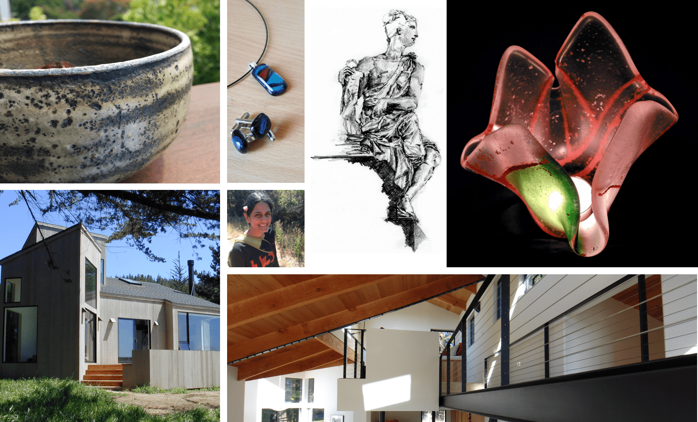

My design sensibilities were forged in the crucible of Cal Poly's College of Architecture & Environmental Design (San Luis Obispo), and honed through a decade+ career as an architect in San Francisco, where I designed some of the places where people live, work, and play today.
Practicing architecture in the Bay Area led me to projects for tech startups and gaming companies, where I discovered User Experience (UX) Design. I joined MIT's xPro Human-Computer Interaction Program, and have been applying my sense of structure and space in the digital realm ever since.
As an Architect, I turned wishlists into building designs, and guided those designs through construction. As a UX Designer, I turn wishlists into user interfaces (UIs), and guide these interfaces through implementation. In both contexts, I advocate for end-users, strive for seamlessness, and tame complexity: from mobile apps to campus master plans.
Work aside, I enjoy getting my hands dirty with traditional materials: clay, glass, and wood. I am also an avid social runner with a passion for after-run donuts.
Clients I've designed for: